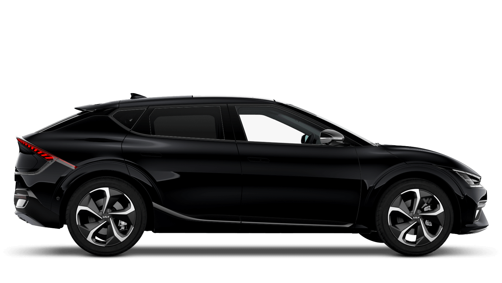

Testing the Kia EV6
A year ago, over the Christmas break, I rented a Polestar 2 as my first foray into the land of electric vehicles. This year, I was in a similar predicament - a week away from home in Sydney and needing to rent a car. Europcar came to the party this time, adding a raft of new Kia EV6s to their fleet. The car looks great. I like the design and shape, especially the details in the lights and body panels.

Getting Started
Our pickup didn't really go smoothly with Europcar. I've done a few rentals with them recently and not had any issues - but when we arrived at 7.30pm there was no car ready on the lot and the only one available had around 50% charge. The fact that I had to book in advance and have the booking confirmed for this specific vehicle meant they knew I was coming and what time I would be there. After enquiring about a charge card or credit, I was informed that it wasn't on offer - take it or they can allocate a different car. I decided to go ahead and take the one available as we were hungry and keen to get on the road to eat and make a tour we had booked at Observatory Hill (which I recommend!).
So after about 30 more minutes, the car arrived.
I'd read a lot about Kia and Hyundai as the kings of the EV world, producing great cars with the latest and greatest technology and all the features - fastest charging, big displays, and comfortable interiors. So I had high hopes for this experience. The EV6 is a pretty hefty car. It is probably a medium-sized sedan but sits higher. I was expecting lots of space, and there was in the cabin. The boot, however, was tiny. Our suitcases required a bit of Tetris to get them in and allow the automatic tailgate to close. There is no depth to the trunk at all - it's flat and very shallow. In the profile pic above, you can make out where the rear bumper ends, just before the brake light swoop. That's it. The whole boot is that deep, and the height disappears with the rake of the rear window. This is not family car territory and you would struggle with a pram and shopping.
Shock number two - connecting your phone. Yes, the Kia EV6 has carplay. It's not wireless, so you need to plug your phone in. There are a myriad of USB-C ports around the car. The thing is - they are charging ports - not data ports. There is one USB data port that you need to use for Carplay - but it's USB-A. Plugging the phone in via USB-C port did nothing. Going through the menus and the phone would connect via Bluetooth, but not via the USB. We tried two cables, nothing – the same issue.
20 minutes into hiring this car and I was not impressed. I was hungry though. So we used the unbuilt navigation to punch in our destination, Millers Point, and hit the road.
'Driving Aids'
It's been a while since I've driven a Kia. The last time, it was a work car, and I hated every minute of it. The steering was spongy, the performance was less than enthusiastic and the build quality was questionable. I've had that experience hanging over me ever since. So while I read a lot of positive reviews about these new EVs, I have to wonder - is it true? Have they changed? Are Kia's now drivable?
My first experience wasn't great. The car beeps, a lot. The nav likes to talk, a lot. Turning on your indicator displays a rear-facing camera on the side you are indicating up on the dash. Late at night on an unlit street, that just means your dash flashes black, and you're not sure if you've broken the car. Your speed is off to the left of the dash, and the dead centre is a chart showing how Attentive a Driver you are.
On the way into Sydney from the Airport, it was sensory overload.
Trying to drive was impeded by the complexity of the car and the distractions provided by the multitude of 'driving aids'. The car beeps, the steering wheel tugs, the nav warns of an impending school zone, speed limit change, camera, lane option — and all I want to do is concentrate on driving in Sydney traffic and make sure I'm going the right way.
Zombie Mode
So this is a thing. There's a YouTube video and everything. This was the second time I'd turned on the car and .... nothing. The car came on, but I couldn't drive. I couldn't change gears, put it into drive, nothing. My wife pulled out her phone and started Googling, finding the video above fairly quickly. But to have hit this issue on the second time in the car did not bode well on my overall experience so far.
It is an EV
The next day, I got out the manual, worked out the USB issue with the help of my mother-in-law's handy cable and got Apple Carplay running in the car. Now I could use the navigation I was used to, the display I was used to and concentrate on the car to drive with. I set up the seat and driving position better. I tried to get the Heads-Up-Display (HUD) working, but couldn't for the life of me adjust it to fit my preferred driving position. I'll admit I am all torso and ride high in the seat, but nothing abnormal or that a taller driver wouldn't encounter. Back on the road in daylight and the indicator cams made sense (to some degree). Yes, I can see behind me, but I'm looking down to do so - my eyes off the road and what's in front. The cameras also don't show anything that I can't see from my mirrors. This seems like gadgetry for its own sake. The HUD is the same. If the layout of the dash was improved there is nothing I would need from this. Having the current speed on display is nice - so put it in the middle of the dash!
Those frustrations aside, the EV6 is an EV, so you get nice immediate throttle response. The car is heavy, but heavy low to the ground so corners are easy and there is no body roll. Its flat and fast if you want it to be.
The car comes in three modes: Eco, Normal, and Sport. These seem to be configured in a slightly non-sensical way. In Eco, the steering is heavy and the throttle mundane; it forces you to drive more conservatively in a very heavy-handed way. Normal is just that, normal and how you would expect the car to behave. Sport is an odd sensation. The throttle becomes super light and responsive, perhaps a bit too responsive. Alongside that, though, the steering also becomes much lighter. It means you can certainly throw the car around a bit more, but with the super-sensitive throttle, this is set up for a disaster. I did punch the throttle hard at one point and could feel the rear wheels kick out a bit. I almost over-corrected because the steering was too light. In a 'normal' sport mode, everything becomes stiffer, so you get better feedback on the drive. Sport in the Kia is more akin to "Fun Mode" – and I'm not a fan of that. It's what a lot of people will do, but in a way that's not about the driver or driving the car well. I think Kia has really missed a beat here - but it's probably a choice that will be popular and reflects the popular concept of Sport rather than the reality of it.
Charging
So with the car starting at 50% charge there was a need to charge it. I took the opportunity to head to the closest fast charge and see how it went. The Evie 150kw charger has two bays per 'bowser' and will split the charge across the number of cars. I arrived at an empty charger and watched as the car maxed out at 150kw and then ducked out for a beer. The car was at 100% within 30 minutes. I thought I might have a bit longer, but no, this thing sucks down those electrons much faster than the Polestar 2.
Comfort
The EV6 is comfortable. There is oodles of space in the rear seats and the front seats are comfortable. Over the Christmas break we did a lot of ferrying of people and it handled it with style and comfort. The ride is nice, the performance of the car is great and so a lot of the shortcomings I had about Kia were forgotten. This is the best Kia I have driven and it's a great car.
Conclusion
But...
It's a big car, but not overly practical. If your primary aim is driving people around – you're in luck. It's spacious and comfortable. But if those people have stuff – then you're in for a shock. There's not a lot of boot space. There is no hidden compartment or any usable space in the 'frunk'. Then there's the price. The EV6 is not cheap by Kia standards. It's not cheap by general car standards. This is an expensive car – and I'm not sure it suits the price tag. The materials are more 'plasticy' and the 'velour' seat fabric wasn't my favourite. Nor were the white accents on the back seat. I can see this car looking very used very quickly.
For me, 'driver aids' were more gimmick than useful, and some of the basics just weren't done well. The dash layout being the prime example and the UI for the whole infotainment felt dated and the menu system and settings were located in unintuitive spaces. If you want to charge the premium price, the experience has to reflect that. I wouldn't buy this. I wouldn't recommend it unless you're after an Uber vehicle which is unlikely to take anyone to the Airport, because the minute someone turns up with a suitcase it's going to be a hassle.